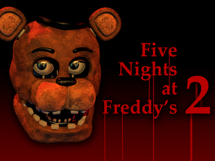

FNAF 2


No place to run. And exactly one place to hide.
- Welcome back to the new and improved Freddy Fazbear's Pizza!
- In Five Nights at Freddy's 2, the old and aging animatronics are joined by a new cast of characters. They are kid-friendly, updated with the latest in facial recognition technology, tied into local criminal databases, and promise to put on a safe and entertaining show for kids and grown-ups alike!
- What could go wrong?
- As the new security guard working nights, your job is to monitor cameras and make sure nothing goes wrong after-hours. The previous guard has complained about "conditions"; namely, the characters trying to get into the office (he has since been moved to day-shift). So to make your job easier, you've been provided with your very own empty Freddy Fazbear head, which should fool the animatronic characters into leaving you alone if they should accidentally enter your office.
- As always, Fazbear Entertainment is not responsible for death or dismemberment.
- In Five Nights at Freddy's 2, the old and aging animatronics are joined by a new cast of characters. They are kid-friendly, updated with the latest in facial recognition technology, tied into local criminal databases, and promise to put on a safe and entertaining show for kids and grown-ups alike!
- What could go wrong?
- As the new security guard working nights, your job is to monitor cameras and make sure nothing goes wrong after-hours. The previous guard has complained about "conditions"; namely, the characters trying to get into the office (he has since been moved to day-shift). So to make your job easier, you've been provided with your very own empty Freddy Fazbear head, which should fool the animatronic characters into leaving you alone if they should accidentally enter your office.
- As always, Fazbear Entertainment is not responsible for death or dismemberment.
Characters
- Toy Freddy
- Toy Bonnie
- Toy Chica
- Mangle
- Puppet
- Withered Freddy
- Withered Bonnie
- Withered Chica
- Withered Foxy
- Jeremy Fitzgerald
- Toy Bonnie
- Toy Chica
- Mangle
- Puppet
- Withered Freddy
- Withered Bonnie
- Withered Chica
- Withered Foxy
- Jeremy Fitzgerald
Stars
Besides rewarding plushies and toys for the Office's decorations, there are 3 stars
to unlock in the second game:
1. Beat Night 5.
2. Beat Night 6.
3. Beat Night 7 on 20/20/20/20 mode.
1. Beat Night 5.
2. Beat Night 6.
3. Beat Night 7 on 20/20/20/20 mode.
Gameplay
- Like the first game, it is an indie point-and-click survival horror video game in
which the player must again survive the night in the "new and improved" Freddy
Fazbear's Pizza while avoiding the animatronics.
- There are six brand-new animatronics, as well as deteriorated versions of the original five from the first game, totaling the amount to eleven. There are several major differences to the game's mechanics compared to the first, most notably the removal of the Doors and the addition of the Freddy Fazbear Head.
- There are six brand-new animatronics, as well as deteriorated versions of the original five from the first game, totaling the amount to eleven. There are several major differences to the game's mechanics compared to the first, most notably the removal of the Doors and the addition of the Freddy Fazbear Head.
Audio
The main menu music (PC version).
The main menu music (Mobile and Console versions).
Development
- The promotional poster for the game was first uploaded on Scott's official website on September
12, 2014. Official pictures released by Scott Cawthon suggested that the original animatronics may
have gone into disrepair like Foxy and have been replaced by new ones.
- However, following the release of the first teaser image, two more images surfaced, depicting the current Bonnie and Foxy alongside the newer models of the same characters. Further updates from Scott's website show that a new animatronic would be joining the cast of already confirmed characters - a clown-like puppet appearing in what is now known as the Prize Corner.
- A two-night demo was released. Three-night demos were released to certain YouTubers such as Markiplier. Soon after the demo came out, the full game was released.
- However, following the release of the first teaser image, two more images surfaced, depicting the current Bonnie and Foxy alongside the newer models of the same characters. Further updates from Scott's website show that a new animatronic would be joining the cast of already confirmed characters - a clown-like puppet appearing in what is now known as the Prize Corner.
- A two-night demo was released. Three-night demos were released to certain YouTubers such as Markiplier. Soon after the demo came out, the full game was released.
Reception
- Five Nights at Freddy's 2 received generally positive reviews from critics. Omri Petitte from
PC Gamer gave the game a score of 70 out of 100, commenting that what he wanted in the sequel
"was more mind games and more uncertainty. I wanted the plodding animatronic suits to find me
and rip my face off in new and interesting ways. I wanted working legs. What I got was a horror
game dipping heavily into deception and subtlety, a wonderfully cruel cocktail of supernatural
mystery and jolts of panicked adrenaline. Enjoying the good parts, though, comes with a cost of
the frustratingly steep difficulty."